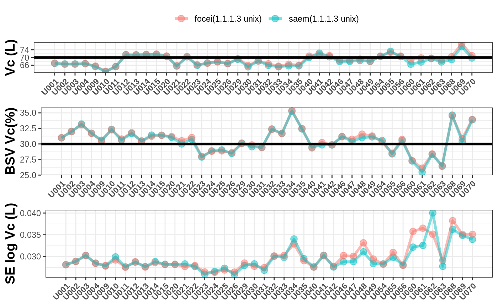
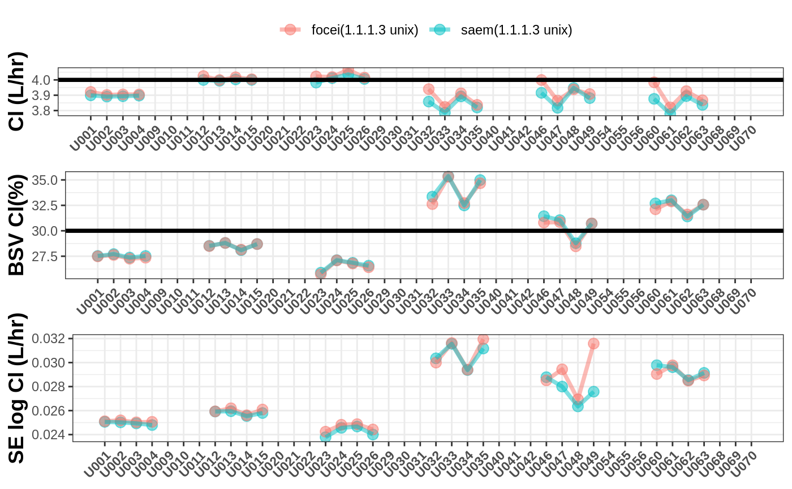
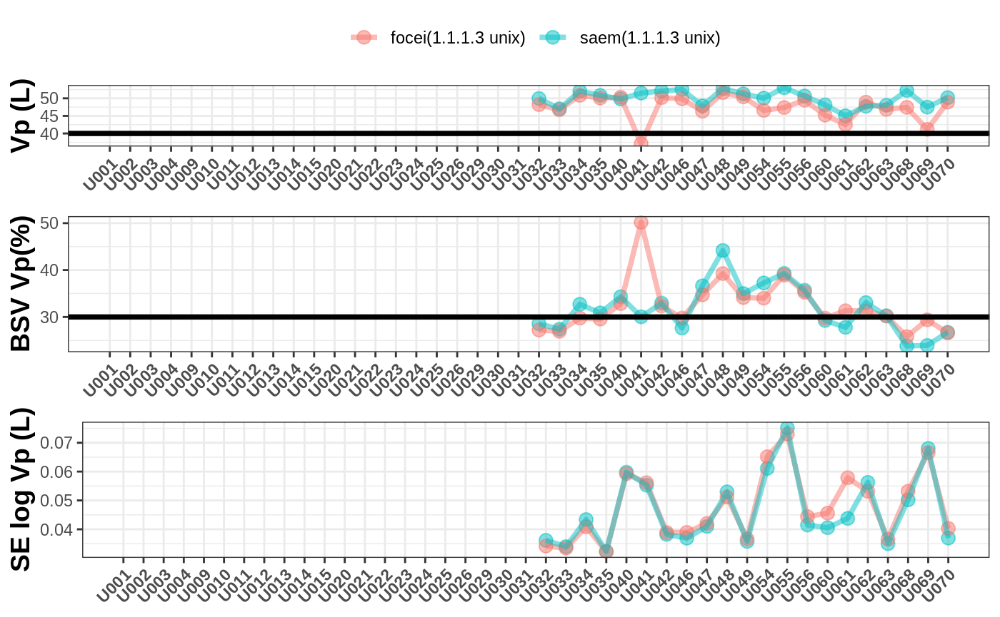
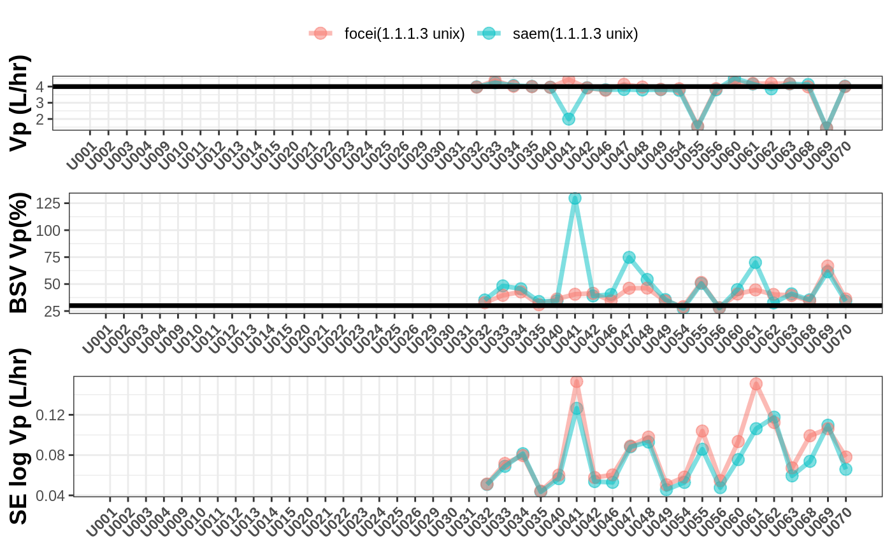
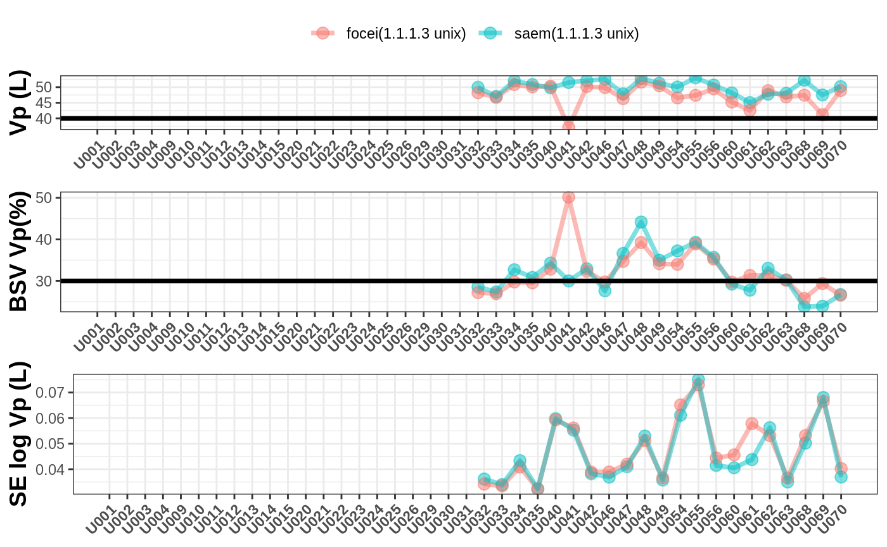
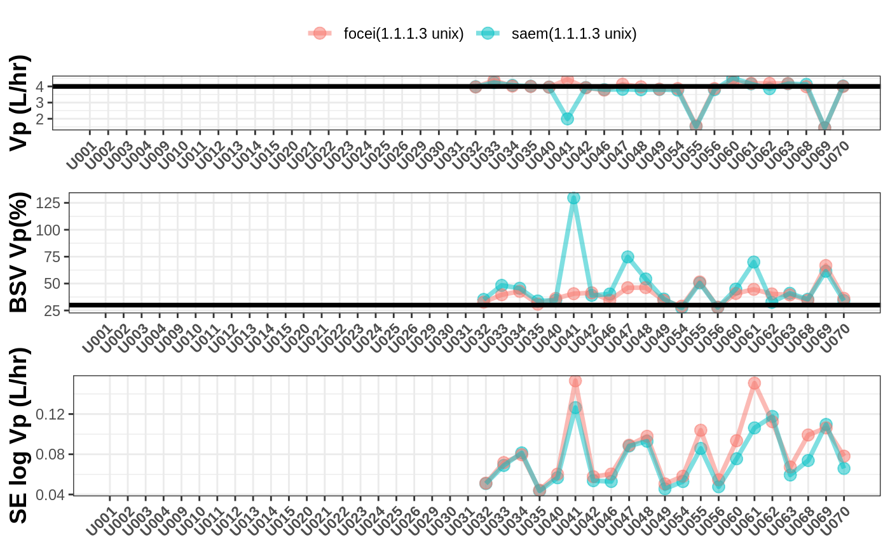
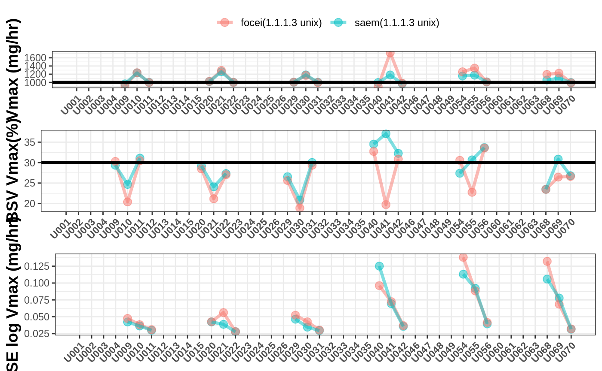
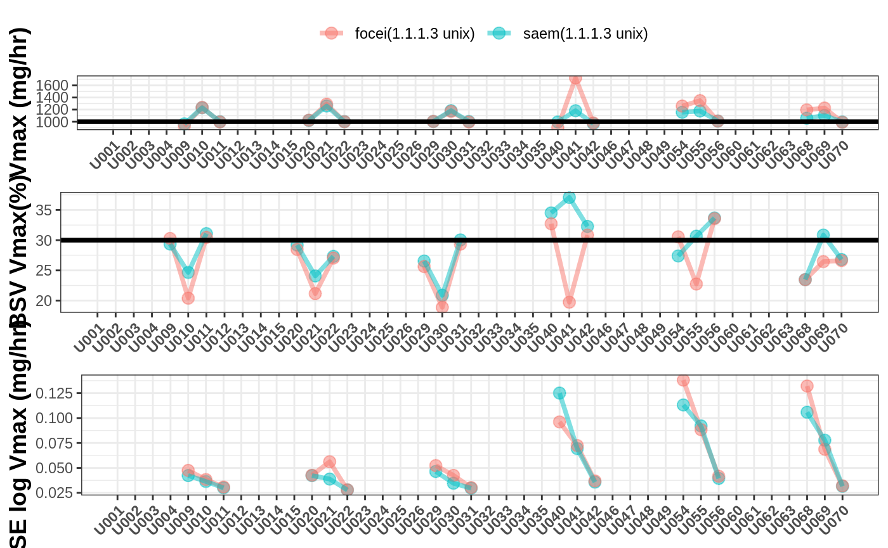

Examination of nlmixr estimation algorithm properties for richly sampled data and multiple models
The nlmixr/SAEM, and nlmixr/FOCEI parameter estimation algorithms were compared with Monolix/SAEM and NONMEM/FOCEI in a richly-sampled data setting with multiple models.
Richly sampled profiles were simulated for 4 different dose levels of 30 subjects each, for a range of test models with:
- one- or two-compartmental disposition
- oral (first-order absorption), intravenous (IV) bolus, or IV infusion administration
- linear or Michaelis-Menten (MM) clearance.
In addition, three dosing and sampling scenarios were investigated: - a single administration with 19 samples over 72 hours - seven repeated daily administrations, with 15 samples over 24 hours after the 4th dose, 19 samples over 72 hours after the 7th dose, and 5 trough samples - the single administration profile followed by the repeated administrations profile, with a total of 58 samples over 12 days
These combinations provided a total of 36 test cases. Inter-individual variability was applied to all pharmacokinetic parameters, and all IIVs were set to 30% (implemented as a diagonal matrix with no covariances). Proportional residual variability was set to 20%. All one-compartment models had a population Vc of 70 L, and all two-compartment models had an additional peripheral volume (Vp) of 40 L. For all oral absorption models, ka was set to 1.0 h-1. All models with linear elimination had a CL of 4.0 L/h, and for all models with non-linear MM elimination, CL was replaced with a Km of 250 mg/L and a Vmax of 1000 mg/h. All two-compartment models had inter-compartmental clearance (Q) set to 4.0 L/h.
library(nlmixr)
library(dplyr)
#>
#> Attaching package: 'dplyr'
#> The following objects are masked from 'package:stats':
#>
#> filter, lag
#> The following objects are masked from 'package:base':
#>
#> intersect, setdiff, setequal, union
library(xgxr)
## Function converting arguments to characters
Cs <- function(...){
sapply(as.list(match.call())[-1], as.character)
}
expected_values <- list();
runno <- "run"
readData <- function(nlmixrVersion=c("1.1.1.3"), est=c("saem", "focei", "nlme"),
platform="unix",
runs=sort(Cs(U001,U002,U003,U004,U009,U010,U011,U012,U013,U014,
U015,U020,U021,U022,U023,U024,U026,U025, U029, U030,U031,
U032,U033,U035,U034,U040,U041,U042,U046,U047,U049,U048,
U054,U055,U056,U060,U061,U062,U063,U068, U069,U070))){
.ret <- expand.grid(ver=nlmixrVersion, est=est, os=platform, run=runs, stringsAsFactors=FALSE) %>%
mutate(src=paste0("values-", ver, "-", run,"_", est, "-", os, ".R"))
.ret <- lapply(seq_along(.ret$ver), function(x){
.c <- setNames(as.character(.ret[x, ]), names(.ret))
.f <- file.path(system.file(package="nlmixr.examples"), "models", .c["src"]);
if (file.exists(.f)){
source(.f)
.ret <- expected_values[["run"]]
.ret1 <- setNames(.ret$parFixedDf$`Back-transformed`,
sapply(rownames(.ret$parFixedDf),
function(x){
if (x == "prop.err"){
x
} else {
substr(x, 2, nchar(x))
}
}))
.ret2 <- setNames(.ret$parFixedDf$`SE`,
sapply(rownames(.ret$parFixedDf),
function(x){
if (x == "prop.err"){
x
} else {
paste0("SE.", substr(x, 2, nchar(x)))
}
}))
.ret3 <- setNames(.ret$parFixedDf$`BSV(CV%)`,
sapply(rownames(.ret$parFixedDf),
function(x){
if (x == "prop.err"){
x
} else {
paste0("BSV.", substr(x, 2, nchar(x)))
}
}))
.ret2 <- .ret2[names(.ret2) != "prop.err"]
.ret3 <- .ret3[names(.ret3) != "prop.err"]
.tmp <- c("VM", "KM", "Q", "Vp", "KA", "Cl")
.tmp2 <- paste0("BSV.", .tmp)
.tmp3 <- paste0("SE.", .tmp)
.tmp <- c(.tmp, .tmp2, .tmp3)
.ret <- data.frame(t(c(.ret1, .ret2, .ret3)), time=sum(.ret$time))
for(.f in .tmp){
if (is.null(.ret[[.f]])){
.ret[[.f]] <- NA
}
}
.ret <- cbind(.ret, data.frame(t(.c)))
return(.ret)
} else {
.out <- c("Cl", "Vc", "prop.err", "SE.Cl", "SE.Vc", "BSV.Cl", "BSV.Vc", "VM", "KM", "Q", "Vp", "KA", "BSV.VM", "BSV.KM", "BSV.Q", "BSV.Vp", "BSV.KA", "SE.VM", "SE.KM", "SE.Q", "SE.Vp", "SE.KA", "time");
.ret <- cbind(data.frame(t(setNames(rep(NA, length(.out)), .out))),
data.frame(t(.c)))
return(.ret)
}
})
.w <- which(sapply(seq_along(.ret), function(x){!is.null(.ret[[x]])}));
.ret <- .ret[.w]
return(do.call("rbind", .ret))
}Setup general plot function
library(ggplot2)
library(gridExtra)
#>
#> Attaching package: 'gridExtra'
#> The following object is masked from 'package:dplyr':
#>
#> combine
xgx_theme_set()
f <- function(nlmixrVersion=c("1.1.1.3"), est=c("saem", "focei", "nlme"),
platform="unix"){
ret <- readData(nlmixrVersion=nlmixrVersion, est=est,
platform=platform) %>%
mutate(by=paste0(est, "(", ver, " ", os, ")"),
run2=as.numeric(run))
.lvl <- levels(ret$run)
.brk <- seq_along(.lvl);
.f <- function(var="Vc", tval=70, ylab="Vc (L)", bsvLab="BSV Vc(%)", bsvVal=30){
p1 <- ggplot(ret, aes_string("run2", var, color="by")) +
geom_point(size=3, alpha=0.5) +
geom_line(alpha=0.5, size=1.3) +
geom_hline(yintercept=tval, size=1.3) +
theme(axis.text.x = element_text(face="bold", angle=45, hjust=1),
axis.title.y=element_text(face="bold", size=14),
axis.title.x=element_blank(),
legend.position="top") +
labs(color="") +
scale_x_continuous(breaks=.brk,labels=.lvl, minor_breaks=NULL) +
ylab(ylab)
p2 <- ggplot(ret, aes_string("run2", paste0("BSV.", var), color="by")) +
geom_point(size=3, alpha=0.5) +
geom_line(alpha=0.5, size=1.3) +
geom_hline(yintercept=bsvVal, size=1.3) +
theme(axis.text.x = element_text(face="bold", angle=45, hjust=1),
axis.title.y=element_text(face="bold", size=14),
axis.title.x=element_blank(),
legend.position="none") +
scale_x_continuous(breaks=.brk,labels=.lvl, minor_breaks=NULL) +
ylab(bsvLab)
p3 <- ggplot(ret, aes_string("run2", paste0("SE.", var), color="by", group="by")) +
geom_point(size=3, alpha=0.5) +
geom_line(alpha=0.5, size=1.3) +
theme(axis.text.x = element_text(face="bold", angle=45, hjust=1),
axis.title.y=element_text(face="bold", size=14),
axis.title.x=element_blank(),
legend.position="none") +
scale_x_continuous(breaks=.brk, labels=.lvl, minor_breaks=NULL) +
ylab(paste0("SE log ", ylab))
grid.arrange(p1, p2, p3, ncol=1)
}
suppressWarnings(.f())
suppressWarnings(.f(var="Cl", tval=4, ylab="Cl (L/hr)", bsvLab="BSV Cl(%)"))
suppressWarnings(.f(var="KA", tval=1, ylab="Ka (1/hr)", bsvLab="BSV Ka(%)"))
suppressWarnings(.f(var="Vp", tval=40, ylab="Vp (L)", bsvLab="BSV Vp(%)"))
suppressWarnings(.f(var="Q", tval=4.0, ylab="Vp (L/hr)", bsvLab="BSV Vp(%)"))
suppressWarnings(.f(var="KM", tval=250, ylab="Km (mg/L)", bsvLab="BSV Km(%)"))
suppressWarnings(.f(var="VM", tval=1000, ylab="Vmax (mg/hr)", bsvLab="BSV Vmax(%)"))
}Current Version plots
SAEM, FOCEi and nlme
nlmixrVersion <- as.character(packageVersion("nlmixr"));
f(nlmixrVersion, c("saem", "focei"), "unix") 
 
